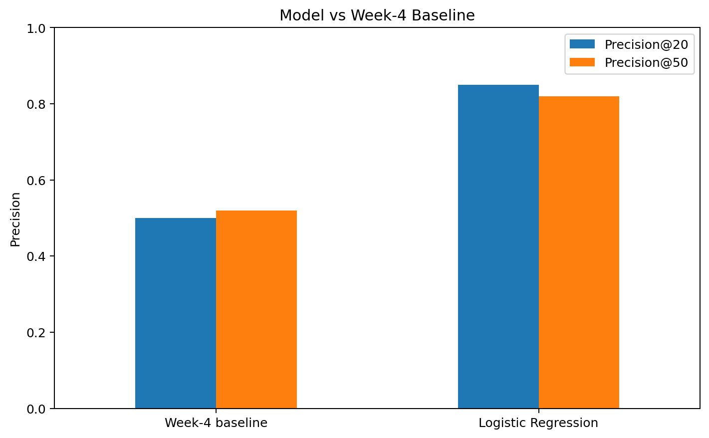

Abstract
This paper asks whether a simple machine-learning model can prioritize content observations for human review based on their measured risk of future search-performance decline. Using the FlyRank internship warehouse release v20260703, 96,268 eligible client-content observations were built from March 2026 features and an April 2026 future-decline outcome. Logistic Regression ranked observations by predicted probability and was compared with a transparent Week-4 rule under an 80/20 client-grouped holdout. On 22,411 held-out observations across 8 clients, the model measured Precision@20 of 0.85 and Precision@50 of 0.82 versus 0.50 and 0.52 for the baseline, with a test positive rate of 0.6437. These results provide directional decision support for human review, not a causal claim that refreshing a page will improve performance.
1. Introduction / Problem
Content teams often have more pages to review than they can inspect immediately. The practical question in this project is therefore not simply whether a page is performing well or poorly, but which observations should be reviewed first.
This work frames that problem as ranking. A learned model produces a probability score that can be used to order observations for human review, while a transparent rule-based baseline provides a simple comparison point.
The output is intended as decision support: a high-ranked observation is a reason to inspect the page, not proof that a refresh is required.
2. Data
The study uses the FlyRank internship warehouse release
v20260703, hosted in the gated
FlyRank/internship-warehouse dataset.
The main table is
fact_content_daily_performance, whose daily grain is
report date × client × content. The release contains approximately
78.8 million daily-performance rows covering 2025-01-27 through
2026-06-30.
Analysis windows
- March 2026 — feature / decision window.
- April 2026 — future outcome window.
Model features
march_impressionsmarch_clicksmarch_ctrmarch_avg_positionmarch_days_observed
Eligibility and exclusions
- At least 100 March GSC impressions.
- At least 14 GSC-observed days in March.
- At least 14 GSC-observed days in April.
- Rows without available GSC data were excluded.
gsc_avg_position = 0was treated as unavailable.- Future April outcome fields were not used as model features.
- Client and content identifiers were used for grouping, not as predictive features.
Client and content identifiers remain pseudonymized. No client names, private URLs, or private search queries are included.
3. Methodology
Model
Logistic Regression was selected as the first learned model because the task is ranking-oriented and the predicted probability provides a simple, interpretable ranking score.
Future outcome definition
An eligible observation receives a positive future-decline label when average daily GSC impressions in April are at least 20% lower than average daily GSC impressions in March.
This is a declared experimental outcome definition, not a universal definition of content decay.
Baseline
The Week-4 baseline prioritizes observations with at least 100 March
impressions and CTR below the average CTR measured for the March
average-position bucket. Its transparent reason code is
HIGH_EXPOSURE_LOW_CTR.
Validation
The main evaluation uses an 80/20 client-grouped holdout with random seed 42. Training contains 32 clients and 73,857 rows; testing contains 8 clients and 22,411 rows. Client overlap is zero.
Precision@20 and Precision@50 are used because the practical question is which observations should be reviewed first.
Validation audit
| Validation design | Precision@20 | Precision@50 |
|---|---|---|
| Random row split | 0.90 | 0.84 |
| Client-grouped split | 0.85 | 0.82 |
Leakage checks
The final feature set contains only March 2026 variables. No April outcome fields or future-decline label fields are used as model features. The feature-source audit confirmed that all five model inputs come from the March decision window.
4. Results
| Method | Precision@20 | Precision@50 |
|---|---|---|
| Week-4 baseline | 0.50 | 0.52 |
| Logistic Regression | 0.85 | 0.82 |

Model vs Week-4 baseline on the client-grouped held-out test split.
On this held-out-client split, Logistic Regression measured higher precision than the Week-4 baseline at both evaluation cutoffs. The result is specific to this dataset, feature window, future-decline definition, and client-grouped test split.
5. Limitations & Honest Framing
- Results come from one March 2026 feature window and one April 2026 outcome definition.
- The future-decline label is an experimental definition and should not be treated as a universal definition of content decay.
- The main test contains eight held-out clients. The grouped split tests those held-out clients rather than every possible future client.
- Training and test positive-label rates differ: 0.4664 versus 0.6437. This indicates a noticeable difference in outcome prevalence between the two groups.
- The model uses only five search-performance features and does not capture every factor affecting content performance, including search intent, SERP conditions, editorial context, and business context.
- The analysis does not establish that refreshing a page causes better search performance.
- Recommendations are decision-support suggestions for human review, not automatic content actions.
6. Ranked Recommendations
1. Review high-risk observations with meaningful exposure
Start with observations that have a higher predicted probability of the future-decline outcome and meaningful March search exposure. These combine a measured model signal with observed search activity that can make human review useful.
2. Inspect high-risk observations with weak CTR context
Where a high-risk observation also has weak CTR relative to its observed position, review the title, snippet, search intent, and page/result alignment.
3. Treat low-evidence high-risk observations cautiously
Observations with limited current evidence should be reviewed more cautiously because sparse or changing data can make the ranking less stable.
Human review is required
Reviewers should check current search context, search intent, recent page changes, business and editorial context, and whether the suggested action makes sense before making a change.
What should not be automated
- Automatic content publishing or rewriting.
- Automatic title or metadata changes.
- Automatic deletion, redirects, or de-indexing.
- Automatic legal, brand, or sensitive editorial decisions.
- Treating a high model score as proof that a page needs a particular edit.
7. Reproducibility
The analysis is organized as a sequence of notebooks in the public repository. The main modeling workflow uses fixed random seed 42, March 2026 features, an April 2026 future outcome window, and an 80/20 client-grouped validation split.
Key notebooks
8. Acknowledgments & Data Credit
Built on the FlyRank ML Internship dataset .
This project was completed as part of the FlyRank ML Internship track.